ร้านค้าคู่ค้า (deal partner) — เดินทั้งเส้น
ร้านขายเครื่องผ่อนแทนกองทุน กองทุนจ่ายค่าเครื่องบวกค่าคอมให้ร้านเมื่อสัญญาใช้งานและร้านพิสูจน์การส่งมอบแล้ว
ถ้าลูกค้าคืนเครื่องภายหลัง สัญญาจบทางใบคืนเครื่องทางเดียว หน้านี้เดินทีละจอ ว่าใครเห็นอะไร กดอะไร แล้วอะไรเปลี่ยน
ทุกจอในนี้ถูกเดินจริงบน DEV วันที่ 17–18 กันยายน 2026 · ป้ายภาษาไทยคือป้ายที่ขึ้นบนหน้าจอจริง
0 คนและเอกสาร 3 ใบ
ทั้งเรื่องมีคนสามฝ่าย และเอกสารสามใบที่ไม่ใช่บิลลูกค้า เอกสารแต่ละใบมีเลขขึ้นต้นต่างกัน จำเลขก็พอ
สามตัวละคร จำสามชื่อนี้พอ
SHOP — ร้านคู่ค้า มีเครื่อง มีลูกค้า ไม่มีเงินก้อน · ล็อกอิน db_dealpartner
FUND — ฝ่ายการเงินกองทุน มีเงินก้อน ไม่มีหน้าร้าน · ล็อกอิน ui_fund_finance_a
CREDIT — ฝ่ายสินเชื่อกองทุน อนุมัติลูกค้าอย่างเดียว · ล็อกอิน ui_fund_credit_a
SHOP ออกเครื่อง · FUND ออกเงิน · ลูกค้าผ่อนกับ FUND · FUND จ่ายค่าเครื่อง+ค่าคอมคืน SHOP ทีหลัง
ทั้งระบบตอบคำถามเดียว: FUND จะจ่ายเงินให้ SHOP ตอนไหน จ่ายเร็วไปเสี่ยงเครื่องไม่ถึงลูกค้า
จ่ายช้าไป SHOP ขาดสภาพคล่อง ทุกจอที่เหลือคือคำตอบของข้อนี้
ร้าน ร้าน
สาขาชนิด "คู่ค้า" ของบริษัทกองทุน ขายเครื่องผ่อนแทนกองทุน เก็บเงินดาวน์ไว้เอง
DEV: db_dealpartner · สาขา 7
กองทุน กองทุน
บริษัทชนิด "บริษัทกองทุน" ฝ่ายสินเชื่ออนุมัติ ฝ่ายการเงินตรวจและจ่ายเงินให้ร้าน
DEV: ui_fund_credit_a · ui_fund_finance_a
ลูกค้า
ซื้อเครื่องผ่อน จ่ายดาวน์ที่ร้าน แล้วโอนค่างวดเข้าบัญชีกองทุนผ่านแอป
ไม่เห็นเอกสารสามใบนี้เลย
| เอกสาร | เลข | ใครทำ | คืออะไร |
|---|
| ใบขออนุมัติสินเชื่อ | — | ร้าน ยื่น · สินเชื่อ อนุมัติ |
ขอให้กองทุนอนุมัติลูกค้ารายนี้ ก่อนสัญญาจะเปิดบิลได้ อายุ 14 วัน |
| ใบขอรับเงิน | PS-… | ระบบสร้างเอง |
สิ่งที่กองทุนต้องจ่ายร้าน 1 ใบต่อ 1 สัญญา เกิดเองตอนสัญญาใช้งาน |
| ใบจ่ายเงินร้าน | PP-… | การเงิน |
รวมใบขอรับเงินหลายใบของร้านเดียวกัน แล้วโอนก้อนเดียว |
| ใบคืนเครื่อง | PR-… | ร้าน หรือ การเงิน |
ทางเดียวที่สัญญาร้านซึ่งใช้งานอยู่จะจบได้ |
เงินไหลสวนทางกันหนึ่งจุด — เงินดาวน์กับค่าทำสัญญาลูกค้าจ่ายที่ร้าน และร้านเก็บไว้เลย
ไม่ต้องส่งเข้ากองทุน ตัวเลขนั้นถูกหักออกจากยอดที่กองทุนต้องจ่ายร้านแทน ส่วนค่างวดเดือนถัดไป
ลูกค้าโอนเข้าบัญชีกองทุนโดยตรง ร้านไม่ยุ่ง
1 ร้านเปิดสัญญา แล้วขออนุมัติจากกองทุน
ร้านกรอกสัญญาด้วยตัวช่วยเปิดสัญญาชุดเดิม แต่จะกดต่อไม่ได้ถ้ายังไม่ได้ขออนุมัติจากฝ่ายสินเชื่อของกองทุน
SHOP เปิดสัญญา แล้วติดด่านแรก
SHOP กรอกสัญญาตามปกติด้วยตัวช่วยชุดเดิม กดตรวจความพร้อม แล้วเจอข้อความเดียว:
ต้องได้รับอนุมัติจากกองทุนก่อน เพราะเงินที่จะปล่อยผ่อนเป็นของ FUND ไม่ใช่ของ SHOP
SHOP ยื่น → CREDIT กดอนุมัติ (ไม่มีพิน มีแค่หน้ายืนยัน) → สัญญาเดินต่อได้ ·
ถ้าส่งกลับ สัญญาย้อนเป็นร่าง แก้แล้วยื่นใหม่ · ใบที่อนุมัติมีอายุ 14 วัน
หน้าสัญญา — ตัวช่วยเปิดสัญญา ร้าน /admin/contracts
- กรอกลูกค้า เลือกเครื่องจากสต็อกของร้าน ตั้งงวดและเงินดาวน์ เหมือนสาขาปกติ
- กดตรวจความพร้อม แล้วขึ้นข้อความเดียวว่า ต้องได้รับอนุมัติจากกองทุนก่อน
- ปุ่มยื่นขออนุมัติพาไปสร้างใบขออนุมัติสินเชื่อ
สัญญาร่าง→รออนุมัติ
รออนุมัติ ร้าน /admin/contracts/pending-approval
- รายการใบที่ร้านยื่นไว้ พร้อมสถานะ ยื่นแล้ว อนุมัติแล้ว ส่งกลับ ถอนแล้ว
- ยื่นซ้ำได้ ใบเก่าไม่หาย กลายเป็นประวัติ ใบล่าสุดคือใบที่มีผล
ใบขออนุมัติร้าน ฝ่ายสินเชื่อ /admin/partner-cases
- คิวใบที่ร้านยื่นมา เปิดดูรายละเอียดลูกค้าและเครื่อง
- ปุ่ม อนุมัติ หรือ ส่งกลับ (ไม่ต้องใส่รหัสพิน มีแค่หน้าต่างยืนยัน)
- อนุมัติแล้วมีอายุ 14 วัน เลยกำหนดต้องยื่นใหม่
สัญญารออนุมัติ→อนุมัติแล้ว
ถ้าฝ่ายสินเชื่อส่งกลับหรือร้านถอนใบ สัญญากลับไปเป็นร่าง แก้แล้วยื่นใหม่ได้
2 ลูกค้าจ่ายเงินดาวน์ที่ร้าน แล้วเซ็น
บิลเปิดสัญญาของสาขาร้านรับได้ช่องทางเดียวคือ "ร้านเก็บเงินไว้" เพราะเงินไม่ได้เข้ากองทุน
จ่ายครบแล้วไปหน้าเซ็น เซ็นครบสัญญาใช้งานทันที
ลูกค้าจ่ายดาวน์ที่ร้าน แล้วเซ็น
ลูกค้าจ่ายเงินดาวน์ + ค่าทำสัญญาให้ SHOP ตรงนั้น SHOP เก็บไว้เลย ไม่ส่งเข้า FUND
ก้อนนี้จะถูกหักออกตอน FUND จ่ายเงินให้ทีหลัง หน้าจอรับเงินจึงมีตัวเลือกเดียว — เงินสด/โอน ไม่ขึ้นให้เลือก
จ่ายครบ → เซ็น (ลูกค้า + พยาน 2 คน · ฝั่ง FUND เซ็นให้เองตั้งแต่ต้น) → เซ็นครบ ระบบผูกเครื่องให้เอง สัญญาใช้งานทันที
บิลเปิดสัญญา — รับชำระ ร้าน
- บิลมีสองบรรทัด เงินดาวน์ และค่าทำสัญญา
- ช่องเลือกวิธีชำระมีตัวเลือกเดียว ร้านเก็บเงินไว้ — เงินสดกับโอนไม่ขึ้นให้เลือก
- ยืนยันแล้วบิลเป็นจ่ายแล้ว สัญญาไปรอเซ็น
สัญญาอนุมัติแล้ว→รอเซ็น
แท็บเซ็นเอกสาร ร้าน + ลูกค้า
- ฝั่งกองทุน (ผู้ให้เช่า) เซ็นให้เองตั้งแต่ตอนออกชุดเอกสาร
- เหลือลูกค้าเซ็น และพยานอีกสองคนของสาขา
- เซ็นครบ ระบบผูกเครื่องเข้าสัญญาให้เอง แล้วสัญญาเป็นใช้งาน
สัญญารอเซ็น→ใช้งาน
ติดอยู่จริงข้อหนึ่ง — ร้านเซ็นชุดเอกสารเองจนจบไม่ได้ เพราะคำสั่งที่ใส่ชื่อพยานลงช่องเซ็น
ยังไม่เปิดให้บัญชีร้านใช้ ต้องมีคนฝั่งบริษัทช่วยหนึ่งจังหวะ แจ้ง BE ไว้แล้ว
3 ใบขอรับเงินเกิดขึ้นเอง
วินาทีที่สัญญาเป็นใช้งาน ระบบออกใบขอรับเงินให้ทันที ไม่มีปุ่มสร้าง ร้านไม่ต้องทำอะไร
ใบนี้คือยอดที่กองทุนติดค้างร้านอยู่
ยอดที่ FUND ติด SHOP เกิดขึ้นเอง
สัญญาใช้งานปุ๊บ ระบบตั้งยอดนี้ให้เอง ไม่มีปุ่มสร้าง สูตรคือ
ค่าเครื่อง + ค่าคอม − เงินดาวน์ที่ SHOP เก็บไว้แล้ว — ดูการ์ดในภาพข้างล่าง ชี้ที่กรอบ 2 กับ 3 เห็นสองฝั่งชัด
แต่ยังไม่ได้เงิน — FUND ยังไม่รู้ว่าเครื่องถึงมือลูกค้าจริงไหม การ์ดจึงขึ้น "รอยื่นปิดงาน" = ถึงคิว SHOP พิสูจน์
การ์ดใบขอรับเงิน — บนหน้าสัญญา ร้าน
ตัวเลขบนการ์ด (ตัวอย่างจริงจากสัญญา CT-2609-000503-9):
| บรรทัด | จำนวน | ทางไหน |
|---|
| ค่าเครื่อง | +41,000 | กองทุนจ่ายร้าน |
| ค่าคอมร้าน (17% ของยอดจัด 32,800) | +5,576 | กองทุนจ่ายร้าน |
| เงินดาวน์ | −8,200 | ร้านถือไว้แล้ว |
| ค่าทำสัญญา | −100 | ร้านถือไว้แล้ว |
| สุทธิที่ร้านจะได้รับ | 38,276 | |
- ใต้ตัวเลขเป็นรายการตรวจ: ผูกเครื่องแล้ว และ รูปส่งมอบครบ
- ปุ่ม ยื่นปิดงาน ยังกดไม่ได้จนกว่ารายการตรวจจะเขียวหมด
- มีแท็บประวัติ บันทึกทุกครั้งที่ยื่น ถอน หรือถูกส่งกลับ
ใบขอรับเงินรอยื่นปิดงาน
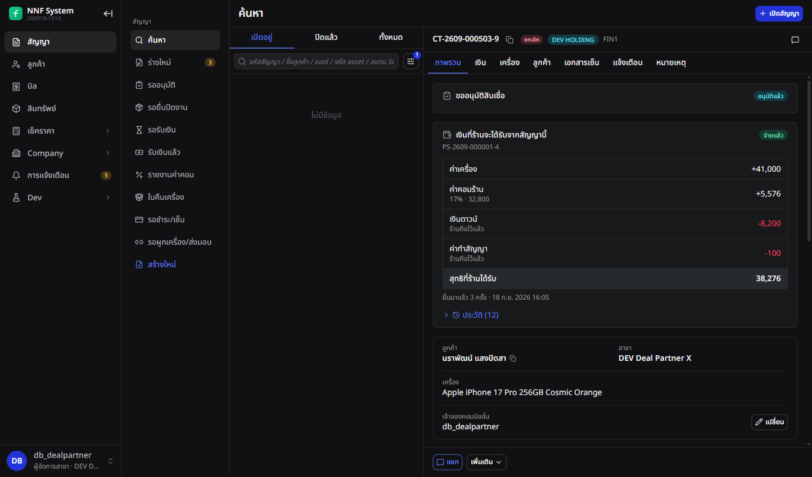
1เอาเมาส์ชี้กรอบ ระบบจะตัดส่วนนั้นมาขยายให้พร้อมคำอธิบาย · กดเพื่อค้างไว้
การ์ด "เงินที่ร้านจะได้รับจากสัญญานี้" บนหน้าสัญญาจริง
เมนูใหม่ของร้าน — ใต้ "สัญญา" ร้าน
- รอยื่นปิดงาน — สัญญาที่ยังไม่ได้ยื่น หัวหน้าจอบอกยอดที่ยังไม่ได้รับรวม
- รอรับเงิน — ยื่นแล้ว รอกองทุน
- รับเงินแล้ว — ใบจ่ายเงินที่โอนมาแล้ว
- รายงานค่าคอม — ค่าคอมรายสัญญาและรายเดือน
- ใบคืนเครื่อง — เอกสารคืนเครื่องทั้งหมดของร้าน
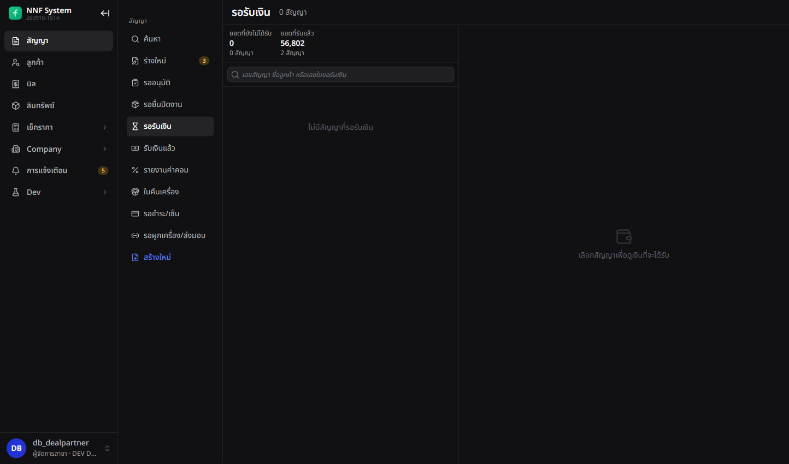
เมนู "รอรับเงิน" ของร้าน
4 ร้านยื่นปิดงานส่งมอบ
ก่อนขอเงิน ร้านต้องพิสูจน์ว่าส่งเครื่องถึงมือลูกค้าจริง ด้วยรูปสามกลุ่มบังคับ
ยื่นแล้วรูปกลุ่มส่งมอบถูกล็อก และปุ่มยกเลิก/ถอดเครื่องบนสัญญาถูกปิดตาม
SHOP พิสูจน์ด้วยรูป 3 กลุ่ม
FUND ไม่ได้อยู่ที่ร้าน รูปคือสายตาแทน บังคับ 3 กลุ่ม ตอบ 3 คำถาม:
ลูกค้าคู่บัตร (คนนี้คือใคร) · ตอนเซ็น (เซ็นเองไหม) · ถือบัตรพร้อมเครื่อง (ของถึงมือไหม)
ครบ → ปุ่มยื่นปิดงานกดได้ · ยื่นแล้วรูปล็อก + ปุ่มยกเลิกสัญญาปิดตาม ·
ถอนการยื่นได้ ทุกอย่างปลดล็อก แต่ระบบจดว่ายื่นมากี่ครั้ง และ FUND เห็นตัวเลขนั้น
อัลบั้มรูปสัญญา ร้าน
- กลุ่มบังคับสามกลุ่ม: ลูกค้าถ่ายคู่บัตรประชาชน ลูกค้ากำลังเซ็นสัญญา ลูกค้าถือบัตรพร้อมเครื่อง
- อีกกลุ่มไม่บังคับคือลูกค้าถือสัญญา และกลุ่มทั่วไป กลุ่มละไม่เกินสามรูป
- ลากรูปข้ามกลุ่มได้ ไม่ต้องอัปโหลดใหม่
- ครบแล้วแบนเนอร์เปลี่ยนเป็น รูปกลุ่มบังคับครบทุกกลุ่มแล้ว
กด "ยื่นปิดงาน" ร้าน
- หน้าต่างยืนยันสรุปเครื่องและจำนวนรูป ยืนยันแล้วขึ้นหน้าสำเร็จ
- ปุ่มบนการ์ดเปลี่ยนเป็น ถอนการยื่น ถอนแล้วยื่นใหม่ได้ ระบบนับว่ายื่นมากี่ครั้ง
ใบขอรับเงินรอยื่นปิดงาน→รอตรวจปิดงาน
สิ่งที่ล็อกทันทีหลังยื่น — รูปสี่กลุ่มส่งมอบขึ้นคำว่า ล็อก แทนปุ่มเพิ่มรูป และปุ่ม
ยกเลิกสัญญา ผูกเครื่อง ถอดเครื่อง ยุติสัญญา ถูกปิด พร้อมข้อความ
ร้านยื่นปิดงานแล้ว ต้องถอนการยื่นก่อนจึงทำรายการนี้ได้
5 กองทุนตรวจ หรือส่งกลับให้แก้
ฝ่ายการเงินของกองทุนเปิดคิว ไล่ดูรูปแล้วติ๊กว่าตรวจแล้ว ใบที่ติ๊กแล้วเท่านั้นจึงเข้ารอบจ่ายได้
ร้านมองไม่เห็นการติ๊กนี้เลย
FUND ไล่ดูรูป แล้วติ๊กหรือส่งกลับ
FUND เปิดคิว ดูรูป เช็คว่าคนในรูปตรงกับลูกค้าไหม เครื่องตรงกับที่ผูกไหม
ผ่าน → ติ๊ก ตรวจแล้ว (SHOP ไม่เห็นติ๊กนี้) · ไม่ผ่าน → ส่งกลับพร้อมเหตุผลเป็นคำไทย รูปปลดล็อกให้แก้
กับดัก: SHOP ถอนแล้วยื่นใหม่ → ติ๊กถูกล้างเอง หลักฐานชุดใหม่ต้องตรวจใหม่ ·
แท็บในภาพข้างล่างคือลำดับขั้น เดินจากซ้ายไปขวา
คิวใบขอรับเงิน การเงิน /admin/partner-settlements
- แท็บ: ร้านค้างยื่น · รอตรวจ — ยังไม่ตรวจ · ตรวจแล้ว รอออกใบจ่ายเงิน · อยู่ในรอบจ่าย
- แต่ละแถวบอกยอดสุทธิ ยื่นมาแล้วกี่วัน และกี่ครั้ง
- ถ้าร้านยังไม่ได้ลงบัญชีรับเงิน ขึ้นเตือน ร้านยังไม่มีบัญชีรับเงิน พร้อมลิงก์ไปหน้าเงื่อนไขร้าน
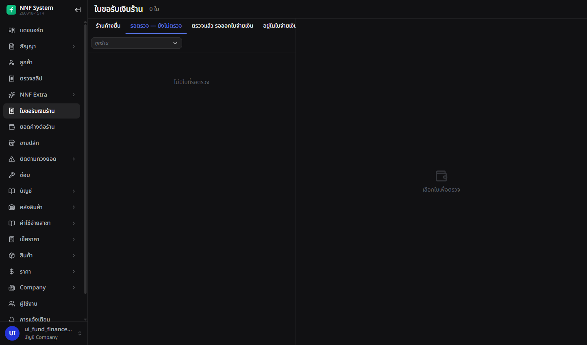
คิว "ใบขอรับเงินร้าน" — ว่างอยู่ตอนถ่าย เพราะทุกใบเดินจนจบไปแล้ว
เปิดใบขึ้นมาตรวจ การเงิน
- เห็นรูปส่งมอบทั้งหมด ล็อกอยู่ ดูได้แต่แก้ไม่ได้ พร้อมลิงก์เปิดแท็บเครื่อง
- ประวัติไล่เรียง: ร้านยื่น → ร้านถอน → ร้านยื่นใหม่ แต่ละแถวบอกว่ามีกี่รูป กี่กลุ่ม
- ท้ายหน้ามีช่องติ๊ก ตรวจแล้ว และปุ่ม ส่งกลับให้แก้
ติ๊กแล้วยังไม่ตรวจ→ตรวจแล้ว โดย ui_fund_finance_a
ติ๊กแล้วถอนติ๊กได้ และถ้าร้านถอนการยื่นแล้วยื่นใหม่ ติ๊กจะถูกล้างเอง หลักฐานชุดใหม่ต้องตรวจใหม่
ส่งกลับให้แก้ การเงิน
- ต้องเลือกเหตุผลจากรายการ: รูปส่งมอบไม่ครบ · รูปไม่ชัด/ไม่ตรงกลุ่ม · คนในรูปไม่ตรงกับลูกค้า · เครื่องในรูปไม่ตรงกับที่ผูก · สถานะเครื่องยังไม่พร้อม · อื่น ๆ (ระบุ)
- เลือก "อื่น ๆ" แล้วช่องข้อความกลายเป็นบังคับ ปุ่มบันทึกยังกดไม่ได้จนพิมพ์
- หน้ายืนยันเตือนว่า รูปส่งมอบจะปลดล็อก และติ๊กตรวจแล้วจะถูกล้าง
ใบขอรับเงินรอตรวจปิดงาน→ส่งกลับให้แก้
ฝั่งร้าน: การ์ดขึ้นกล่องเหตุผลที่ถูกส่งกลับ อัลบั้มปลดล็อก แก้รูปแล้วยื่นใหม่ได้
ยอดค้างต่อร้าน การเงิน /admin/partner-balance
- หนึ่งแถวต่อร้าน: จำนวนใบที่ยังเปิด แยกว่ารออยู่ที่ร้านหรือที่กองทุน
- ยอดที่ยังไม่ได้จ่าย และยอดที่จ่ายไปแล้ว
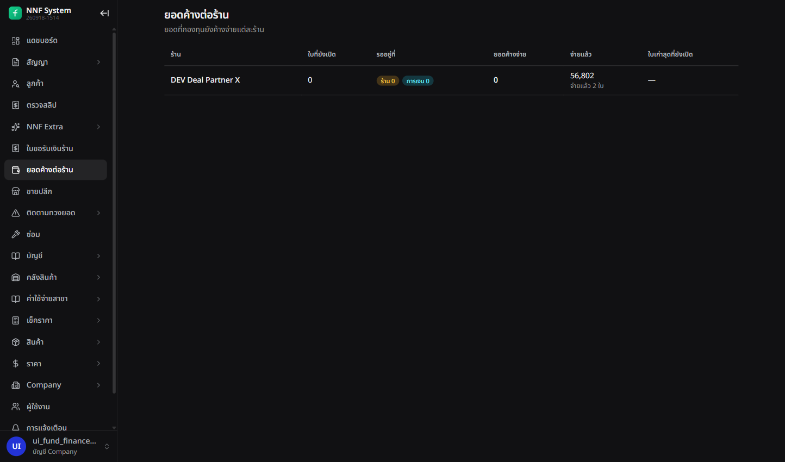
ร้านเดียวบน DEV จ่ายไปแล้วสองใบ รวม 56,802 ไม่มียอดค้าง
6 ออกใบจ่ายเงิน แล้วโอนก้อนเดียว
การเงินรวมใบขอรับเงินที่ตรวจแล้วของร้านเดียวกันเป็นใบจ่ายเงินหนึ่งใบ โอนเงินจริงนอกระบบ แล้วกลับมากดจ่ายแล้ว
จังหวะที่กดจ่ายแล้ว เครื่องทุกเครื่องในใบเปลี่ยนเจ้าของจากร้านเป็นกองทุน
FUND รวบหลายใบ โอนครั้งเดียว
FUND รวมใบที่ติ๊กแล้วของร้านเดียวกันเป็นก้อนเดียว โอนจริงนอกระบบ แล้วกลับมากด จ่ายแล้ว + วันที่โอน
จังหวะนี้เครื่องเปลี่ยนมือ จาก SHOP เป็น FUND — จ่ายค่าเครื่องแล้ว เครื่องก็ต้องเป็นของผู้จ่าย
ผลคือ SHOP ยกเลิกสัญญาเองไม่ได้อีก ปุ่มปิดสนิท จบได้ทางคืนเครื่องอย่างเดียว
จ่ายผิดทั้งก้อน → กลับรายการทั้งใบ เงินถอย เครื่องถอย · ผิดแค่ยอด → เพิ่มแถวปรับยอดบนใบเดิม ·
ในภาพข้างล่าง กรอบ 2 คือสองยอดที่ไม่เท่ากัน กรอบ 4 คือแถวปรับยอด
จัดใบจ่ายเงิน — รายร้าน การเงิน /admin/partner-payouts
- แท็บ: จัดใบจ่ายเงิน · กำลังจัดใบ · จ่ายแล้ว · กลับรายการแล้ว
- แถวร้านบอก รอกี่ใบ ตรวจแล้วกี่ใบ พร้อมจ่ายกี่ใบ ยอดรวม และรอมาตั้งแต่เมื่อไหร่
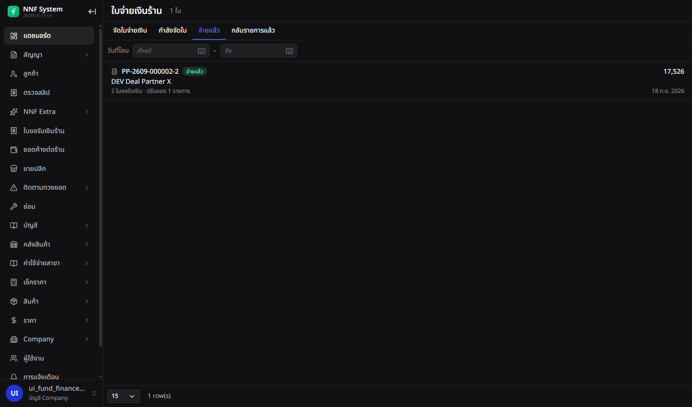
แท็บ "จ่ายแล้ว" ของฝ่ายการเงิน
หน้าจัดใบของร้านหนึ่งร้าน การเงิน
- ใบที่ยังไม่ติ๊ก ช่องเลือกเป็นสีจาง กดไม่ได้ พร้อมปุ่มติ๊กตรวจแล้วตรงแถวนั้นเลย
- ปุ่ม เลือกทั้งหมดที่พร้อม แล้วหัวจอสรุป เลือกแล้วกี่ใบ ยอดเท่าไหร่
- ออกใบจ่ายเงิน → ได้เลข
PP-… สถานะร่าง บัญชีรับเงินของร้านถูกจดลงบนใบ
ใบขอรับเงินทุกใบในนั้นรอตรวจปิดงาน→อยู่ในรอบจ่าย
ระหว่างเป็นร่าง ถอดใบออกหรือเพิ่มใบเข้าได้ ร่างที่ผิดให้ยกเลิกร่าง (ต้องใส่เหตุผล) แล้วออกใหม่ ไม่มีการแก้ตัวเลขบนใบ
กด "จ่ายแล้ว" การเงิน
- บังคับใส่วันที่โอน (ใส่วันอนาคตไม่ได้ ปุ่มถูกปิด) บัญชีต้นทางและเลขอ้างอิงใส่หรือไม่ใส่ก็ได้
- หน้าสำเร็จบอกด้วยว่า เครื่อง 2 เครื่องเป็นของ holding แล้ว พร้อมเลขเครื่องและต้นทุน
ใบจ่ายเงินร่าง→จ่ายแล้ว
หลังจ่ายแล้ว สัญญายกเลิกไม่ได้อีก — ปุ่มบนสัญญาขึ้นข้อความ
holding จ่ายเงินร้านแล้ว ทำรายการนี้ไม่ได้ — ใช้ขั้นตอนคืนเครื่อง
จบสัญญาได้ทางใบคืนเครื่องอย่างเดียว
แก้เมื่อจ่ายผิด — สองทาง การเงิน
- ผิดทั้งใบ (กดพลาด ผิดร้าน จ่ายซ้ำ) → กลับรายการทั้งใบ เลือกเหตุผลจากรายการ
แล้วยืนยันอีกชั้น ใบขอรับเงินกลับไปรอตรวจ เครื่องกลับเป็นของร้าน และติ๊กตรวจแล้วถูกล้าง
- ผิดแค่ยอด (โอนเพิ่ม หรือร้านโอนคืน) → ปรับยอด เพิ่มแถวบนใบ
หัวใบเปลี่ยนเป็นจ่ายจริงรวม แถวที่ยกเลิกยังอยู่บนใบแบบขีดฆ่า พร้อมเหตุผล
- มีแถวปรับยอดอยู่ กลับรายการทั้งใบไม่ได้ ปุ่มถูกปิดพร้อมคำอธิบาย ยกเลิกแถวปรับยอดก่อน
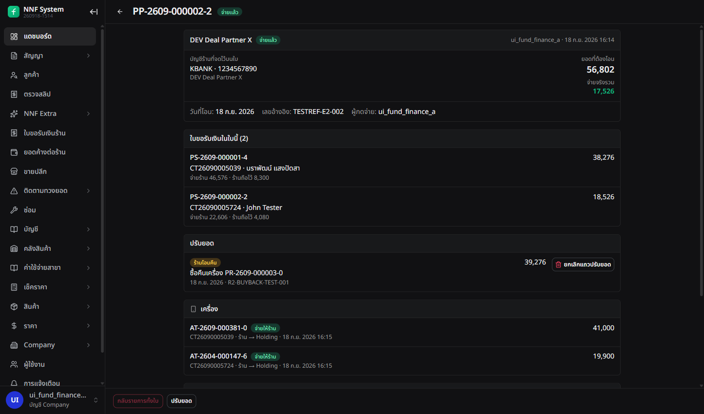
ใบจ่ายเงินจริงที่จ่ายแล้ว
ฝั่งร้านเห็นอะไร ร้าน
- เมนู รับเงินแล้ว ขึ้นใบจ่ายเงิน วันที่โอน บัญชีที่เข้า และเลขอ้างอิง
- ใบที่ถูกกลับรายการขึ้นยอดขีดฆ่า พร้อมเหตุผล เช่น จ่ายผิดพลาด
- เมนู รายงานค่าคอม แสดงค่าคอมรายสัญญาและแถบรวมรายเดือน
- หัวจอสลับเป็น ยอดที่ยังไม่ได้รับ 0 · ยอดที่รับแล้ว 56,802
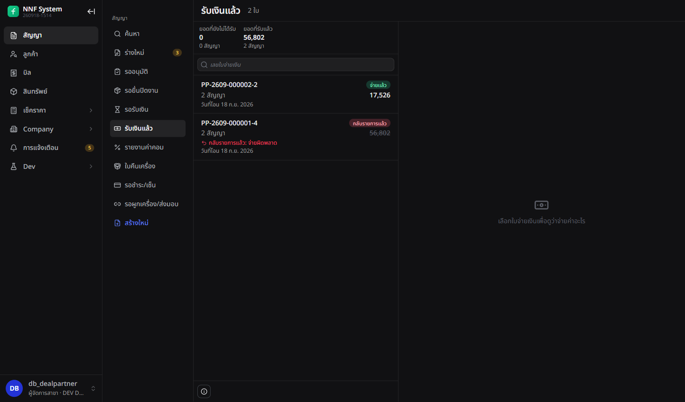
เมนู "รับเงินแล้ว" ของร้าน
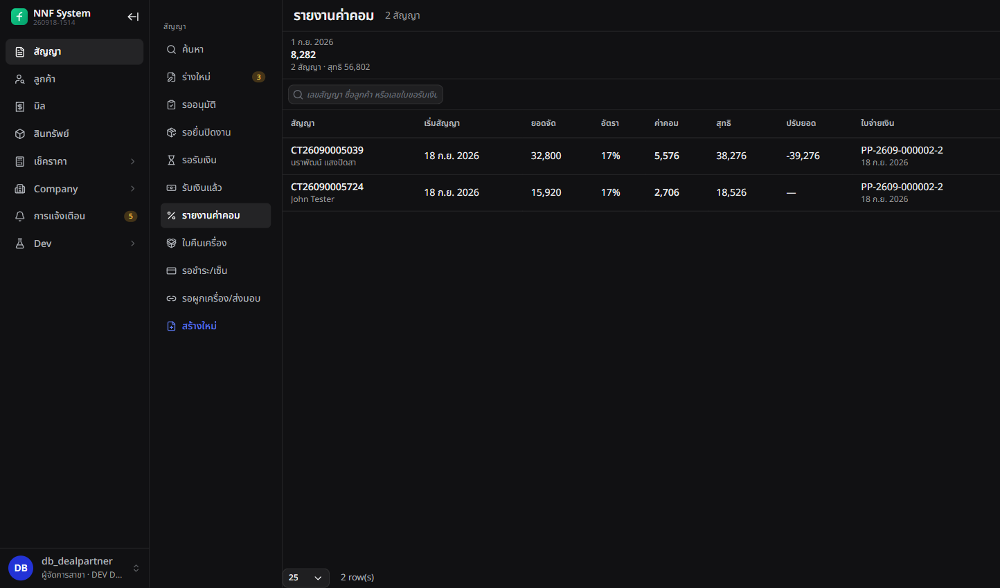
รายงานค่าคอมของร้าน
7 ค่างวดของลูกค้าเข้ากองทุนอย่างไร
ร้านไม่รับค่างวด เป็นแค่คนแนะนำ ลูกค้าโอนเข้าบัญชีของกองทุนแล้วส่งสลิปในแอป
ฝ่ายการเงินของกองทุนเป็นคนตรวจสลิป
ค่างวดไม่ผ่าน SHOP เลย
ลูกค้าโอนเข้าบัญชี FUND ตรง ๆ แล้วส่งสลิปในแอป — SHOP จบหน้าที่ตั้งแต่วันส่งเครื่อง
ผลกับ FE: หน้ารับค่างวดของสัญญาร้าน ไม่มีตัวเลือกเงินสด เหลือแต่โอน และร้านไม่ต้องปิดยอดสิ้นวัน
FUND เป็นคนตรวจสลิป · CREDIT ไม่เกี่ยว เมนูนี้จึงไม่ขึ้นให้เขา ·
สิทธิ์บันทึก/ยืนยันการชำระต้องให้เป็นรายคน ไม่ได้ติดมากับตำแหน่ง
ช่องทางรับเงินที่เลือกได้ ขึ้นกับประเภทบิล
| บิล | รับได้ทางไหน | ทำไม |
|---|
| บิลเปิดสัญญา (ดาวน์ + ค่าทำสัญญา) | ร้านเก็บเงินไว้ เท่านั้น | เงินอยู่กับร้าน หักในใบขอรับเงิน |
| ค่างวด ปิดก่อนกำหนด ค่าธรรมเนียม | โอนเงิน และกระเป๋าเงินต่าง ๆ | เงินเข้าบัญชีกองทุน ไม่มีเงินสด |
- บัญชีรับเงินของกองทุนถูกตั้งไว้ที่สาขาร้าน แอปลูกค้าเลือกบัญชีให้เองตามสาขาของสัญญา
- หน้ารับชำระค่างวดของสัญญาร้าน ช่องวิธีชำระเหลือ โอนเงิน อย่างเดียว เงินสดหายไปจากรายการ
- ร้านไม่ต้องปิดวัน เพราะไม่มีเงินสดให้นับ กฎ "วันก่อนหน้ายังไม่ปิด" ไม่ใช้กับสัญญาของร้าน
คิวสลิปรอตรวจ การเงิน /admin/payment-submissions
- ลูกค้าส่งสลิปในแอป เข้าคิวของบริษัทกองทุน อนุมัติแล้วระบบลงรับค่างวดให้
- ปฏิเสธได้ พร้อมเหตุผล แล้วฝ่ายการเงินติดต่อลูกค้าเอง
- ฝ่ายสินเชื่อไม่ได้เป็นคนตรวจสลิป เมนูนี้จึงไม่ขึ้นให้เขา
สิทธิ์บันทึกและยืนยันการชำระไม่ได้ติดมากับตำแหน่งฝ่ายการเงิน ต้องให้เป็นรายคนจากหน้าสิทธิ์พิเศษ
คนให้คือผู้ดูแลระดับ holding
8 ใบคืนเครื่อง — จบได้สามแบบ
สัญญาร้านที่ใช้งานอยู่จบได้ทางเดียวคือใบคืนเครื่อง ร้านหรือฝ่ายการเงินเปิดใบก็ได้
แต่คนปิดใบคือฝ่ายการเงินเสมอ ปิดใบครั้งเดียวจบทั้งสัญญาและจัดการเจ้าของเครื่องให้ถูกคน
ลูกค้าคืนเครื่อง — SHOP ยกเลิกสัญญาเองไม่ได้
ปุ่มยกเลิก/ถอดเครื่องปิดหมด เหลือปุ่มเดียว คืนเครื่อง / ยุติสัญญา
เพราะเครื่องเป็นของ FUND ไปแล้ว · เปิดใบได้ทั้ง SHOP และ FUND แต่คนปิดคือ FUND เสมอ
รับที่ร้าน → ลูกค้าเซ็นใบรับคืน · ส่งให้บริษัท → FUND ระบุวันที่รับ ·
รับเครื่องแล้ว = เครื่องหลุดจากสัญญา เข้าถังกักตรวจ · ยกเลิกใบได้เฉพาะก่อนรับเครื่อง
แบบจบมี 3 ทาง ตัดสินด้วยคำถามเดียว: จ่ายไปแล้วหรือยัง
ยังไม่จ่าย → ไม่มีเงินเคลื่อน ยอดที่ค้างถูกยกเลิก เครื่องเป็นของ SHOP อยู่แล้ว กลับเข้าสต็อก
จ่ายแล้ว + ในประกัน → SHOP โอนคืนเท่าที่รับไป + ค่าคืนเครื่อง แล้วเครื่องกลับเป็นของ SHOP
จ่ายแล้ว + เกินประกัน → SHOP ส่งเครื่องเข้าคลัง FUND ไม่มีเงินไปมา เครื่องเป็นของ FUND
ระบบเสนอทางที่ถูกให้เองจากสองเงื่อนไขนั้น FUND แค่ยืนยัน · ปิดใบครั้งเดียว = สัญญาจบ + งวดที่เหลือยกเลิก + เครื่องไปอยู่กับเจ้าของที่ถูก ·
สองภาพข้างล่างคือใบเดียวกันคนละแบบจบ ชี้กรอบเดียวกันเทียบได้เลย
เปิดใบจากท้ายหน้าสัญญา ร้าน หรือ การเงิน
- ปุ่ม คืนเครื่อง / ยุติสัญญา มาแทนปุ่มยกเลิกและถอดเครื่องที่ถูกปิดไป
เอาเมาส์ชี้ขึ้นคำอธิบาย สัญญาร้านที่ ACTIVE จบได้ทางเดียวคือใบคืนเครื่อง
- ในหน้าต่างเลือกเหตุผล: ลูกค้าเปลี่ยนใจ/ขอยกเลิก · ลูกค้าผ่อนต่อไม่ไหว · เครื่องมีปัญหา · อื่น ๆ (ระบุ)
- ร้านไม่มีช่องเลือกจุดรับเครื่อง ร้านคือจุดรับเสมอ · การเงินเลือกได้สองแบบ
รับที่ร้าน
ลูกค้าเอาเครื่องมาคืนที่ร้าน ระบบออกใบรับคืนให้ลูกค้าเซ็นคนเดียว ไม่มีพยาน อายุ 7 วัน ออกใหม่ได้
เซ็นครบ = รับเครื่องแล้ว
ส่งให้บริษัท
ลูกค้าอยู่ไกล ส่งเครื่องมาให้กองทุนตรง ฝ่ายการเงินระบุวันที่เครื่องมาถึง ไม่มีการเซ็น
ระบุวันที่ = รับเครื่องแล้วทันที
รับเครื่องแล้ว
เครื่องหลุดจากสัญญา เข้าถังกักตรวจ รูปกลุ่มคืนเครื่องถูกล็อก และใบจ่ายเงินที่เกี่ยวกลับรายการไม่ได้
ยกเลิกใบคืนได้เฉพาะก่อนรับเครื่อง
คิวใบคืนเครื่อง การเงิน /admin/partner-returns
- แท็บเรียงตามขั้นถัดไป: รอลูกค้าเซ็น · รอตั้งแบบจบ · รอเงินซื้อคืน · รอส่งเครื่อง · รอคลังรับ · ยอดค้างสัญญา · พร้อมปิดใบ · และ ทั้งหมด
- แถวบอก เลขใบ สถานะ ขั้นถัดไป ลูกค้า ร้าน สัญญา เครื่อง เหตุผล และใครเปิดใบ
- กดแถวเปิดรายละเอียดด้านขวา มีแท็บ ประวัติ เป็นไทม์ไลน์รวมทุกเรื่องของใบนั้น
เปิดใบคืนใหม่จากหน้าคิวไม่ได้ ต้องไปเปิดจากท้ายหน้าสัญญา เป็นคำถามที่ค้างไว้ให้ BE/PO ตัดสิน
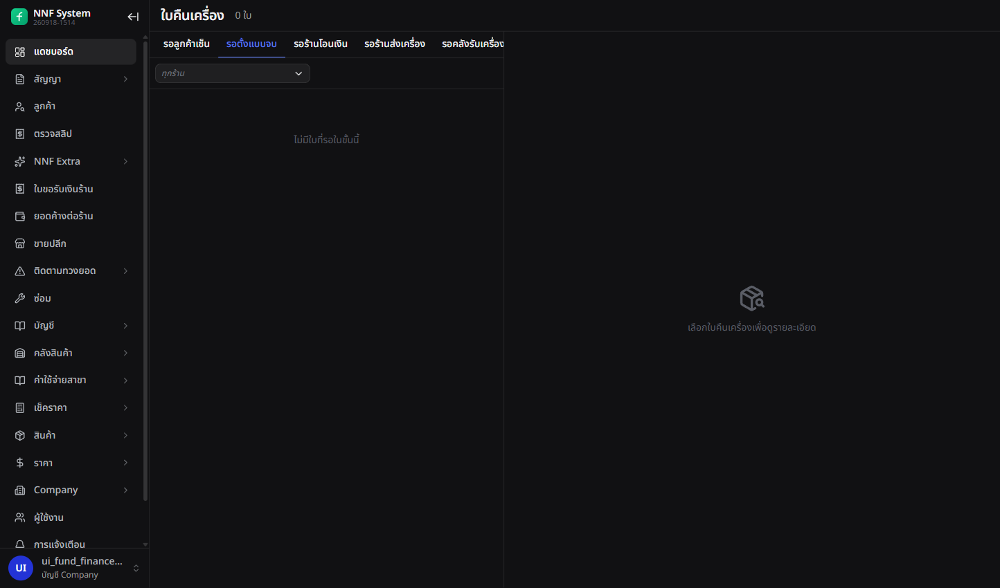
คิวใบคืนเครื่อง — ว่างทุกแท็บตอนถ่าย เพราะใบทั้งสี่เดินจนปิดหมดแล้ว
ตั้งแบบจบ การเงิน
ระบบเสนอแบบจบให้ก่อนแล้ว ตามว่ากองทุนจ่ายเงินไปหรือยัง และยังอยู่ในประกันไหม เปลี่ยนได้จนกว่าจะบันทึกเงินหรือส่งเครื่อง
| แบบจบ | ใช้เมื่อ | เงิน | เครื่องจบที่ใคร |
|---|
| ก่อนกองทุนจ่าย |
ยังไม่ได้จ่ายใบขอรับเงิน |
ไม่มีเงินเคลื่อน ใบขอรับเงินถูกยกเลิก ยอดเหลือ 0 |
ร้าน (ของร้านอยู่แล้ว) กลับเข้าสต็อกขายได้ |
| ร้านซื้อคืน |
จ่ายแล้ว และยังอยู่ในประกัน |
ร้านโอนคืน = ยอดที่รับไป + ค่าคืนเครื่อง บันทึกเป็นแถวปรับยอดบนใบจ่ายเงินเดิม |
ร้าน ขายต่อหรือผูกสัญญาใหม่ได้ |
| ส่งคืนคลังกองทุน |
จ่ายแล้ว และเกินประกัน |
ไม่มีเงินคืน |
กองทุน อยู่ที่คลัง ถูกกักตรวจ |
ตั้งแบบจบแล้ว ปุ่มที่ใช้ไม่ได้กับแบบนั้นจะถูกปิด และท้ายจอบอกเสมอว่ายังปิดใบไม่ได้เพราะอะไร
เส้นทางแบบร้านซื้อคืน การเงิน
- หลังตั้งแบบจบ จอสรุปว่า ยอดที่กองทุนจ่ายไป 38,276 · ค่าคืนเครื่อง 1,000 · ร้านต้องโอนคืน 39,276
- กด บันทึกร้านโอนเงินซื้อคืน ใส่วันที่และเลขอ้างอิง หน้าสำเร็จบอกว่าไปเป็นแถวปรับยอดบนใบจ่ายเงินใบไหน
- เปิดใบจ่ายเงินนั้น เห็นแถว ร้านโอนคืน 39,276 และหัวใบเปลี่ยนเป็นจ่ายจริงรวม 17,526
- ปุ่ม ปิดใบ (สัญญาจบ) ค่อยกดได้
สัญญาใช้งาน→ยกเลิก · เหตุที่จบ: ร้านซื้อคืน
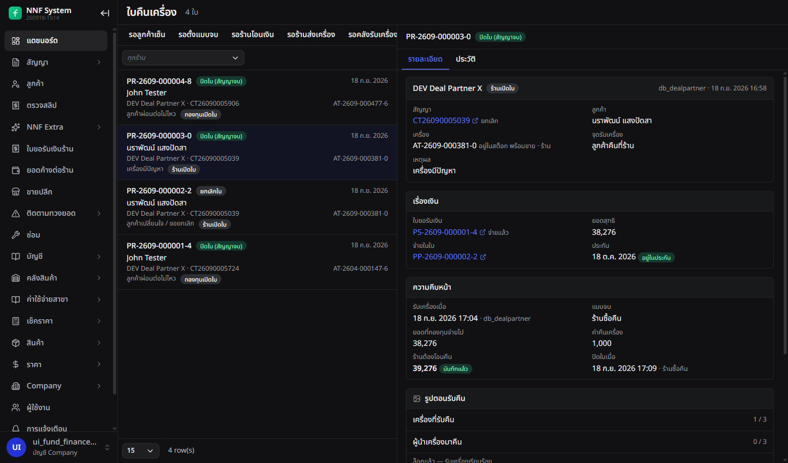
ใบที่จบแบบร้านซื้อคืน
เส้นทางแบบส่งคืนคลัง การเงิน + คลัง
- กด ส่งเครื่องไปคลัง เครื่องเป็นกำลังส่ง ใบไปรออยู่ที่ รอคลังรับ
- หน้าคลัง
/admin/partner-returns/warehouse รับเครื่องเข้า เครื่องกลับเป็นกักตรวจที่คลัง
- กดปิดใบก่อนคลังรับไม่ได้ ระบบตอบว่ายังรอคลังรับอยู่
สัญญาใช้งาน→ยกเลิก · เหตุที่จบ: คืนเครื่อง
ปิดใบ — หน้าสำเร็จบอกผลทั้งหมดในจอเดียว การเงิน
- สัญญาเลขนั้น ยกเลิก พร้อมเหตุที่สัญญาจบเป็นคำไทย ไม่ใช่รหัส
- เจ้าของเครื่องหลังจบ และสถานะเครื่อง เช่น อยู่ในสต็อก พร้อมขาย
- จำนวนงวดที่ถูกยกเลิก
- หน้าต่างเตือนก่อนกดว่า ปิดแล้วย้อนไม่ได้
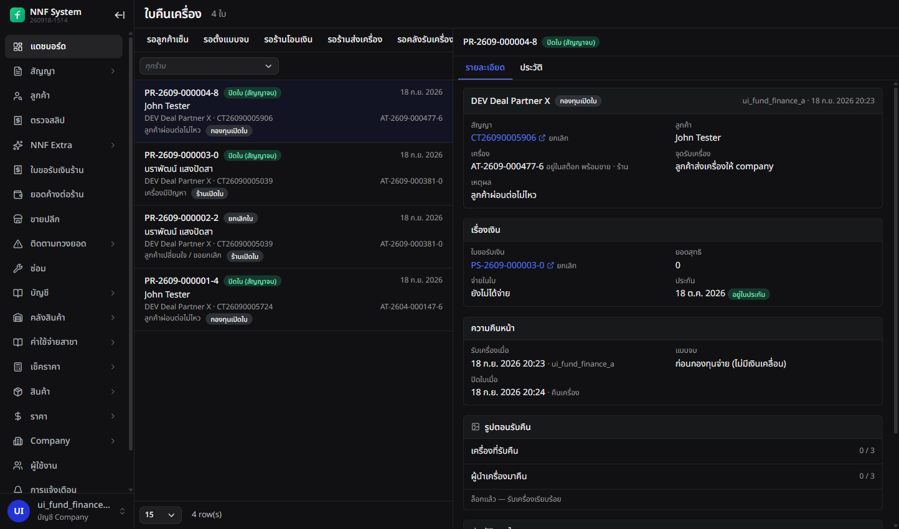
ใบที่จบแบบก่อนกองทุนจ่าย — เทียบกับใบข้างบนได้ตรง ๆ
แท็บประวัติของใบเป็นไทม์ไลน์เดียวรวมห้าเรื่อง: ก้าวของใบ · ใบรับคืนที่ลูกค้าเซ็น · เครื่องย้ายถัง ·
เปลี่ยนเจ้าของ · แถวเงินซื้อคืน แบบร้านซื้อคืนมี 11 แถว แบบก่อนกองทุนจ่ายมี 6 แถว และไม่มีแถวเงินเลย
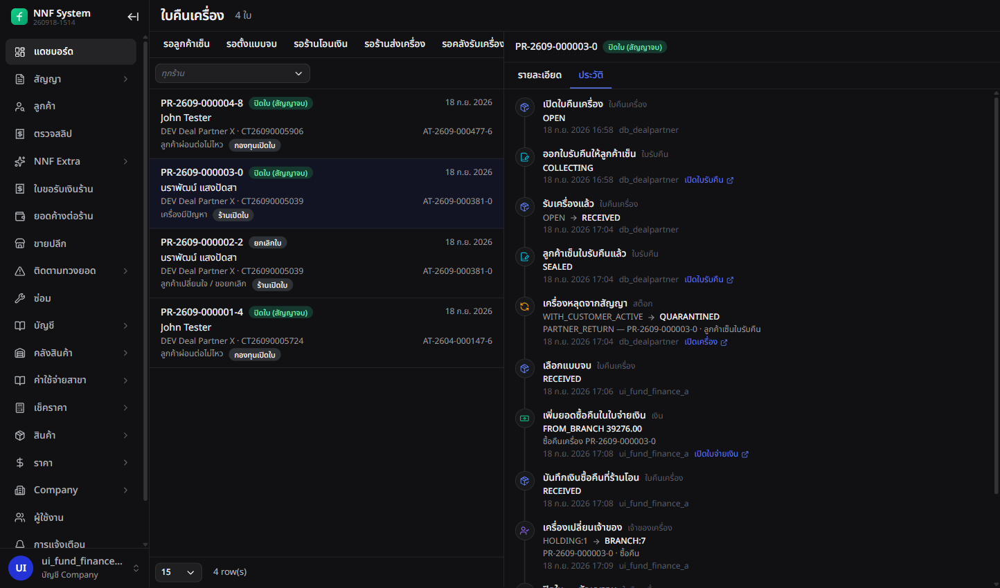
ไทม์ไลน์ของใบที่จบแบบร้านซื้อคืน อ่านไล่ลงมาได้เป็นเรื่อง
9 ของประกอบที่ทำวันเดียวกัน
สี่เรื่องเล็กที่ไม่อยู่ในเส้นทางหลัก แต่เป็นสิ่งที่ทำให้เส้นทางหลักเดินได้
ของที่ต้องตั้งไว้ก่อน ไม่งั้นเส้นทางหลักเดินไม่ได้
ชนิดบริษัท — มีแค่บริษัทกองทุนที่มีร้านคู่ค้าได้และถือเงินได้ · คลังกองทุน — มีได้แห่งเดียว
เป็นปลายทางของเครื่องที่ส่งคืน · รูปจากตัวช่วยเปิดสัญญา — เข้ากลุ่ม "ทั่วไป" แล้ว ลากเข้ากลุ่มส่งมอบได้
เรื่องที่กระทบ FE ตรง ๆ: คนของบริษัทอื่นไม่ได้เจอ 403 แต่ได้ลิสต์ว่าง จึงต้องซ่อนเมนูด้วยสิทธิ์ ไม่ใช่รอ error
ชนิดของบริษัท ผู้ดูแล holding /admin/settings/companies
- คอลัมน์ใหม่ ชนิด — บริษัทดำเนินงาน หรือ บริษัทกองทุน ตอนสร้างบริษัทก็เลือกได้
- บริษัทดำเนินงานมีสาขาคู่ค้าไม่ได้ ตัวเลือกจึงไม่ขึ้นในฟอร์ม
- บริษัทที่มีข้อมูลแล้วเปลี่ยนชนิดไม่ได้ ระบบบอกเลยว่าติดสาขากี่แห่ง เครื่องกี่เครื่อง สัญญากี่ฉบับ
คลังของบริษัทกองทุน ผู้ดูแล holding /admin/company/branches
- ตอนสร้างสาขาภายในใต้บริษัทกองทุน มีช่องติ๊ก เป็นคลังของบริษัท ที่ต้องติ๊ก ปุ่มบันทึกถึงจะกดได้
- บริษัทกองทุนมีคลังได้ใบเดียว สร้างซ้ำระบบบอกว่ามีอยู่แล้วที่สาขาไหน
- คลังนี้คือปลายทางของเครื่องที่คืนแบบส่งคืนคลัง
ใครเห็นแถวของใคร
- คนของบริษัทดำเนินงานไม่เห็นแถวฝั่งกองทุนเลย ไม่ใช่ขึ้นว่าไม่มีสิทธิ์ แต่ไม่มีแถวให้เห็น
- ฝ่ายสินเชื่อเปิดคิวของฝ่ายการเงินได้แต่ว่างเปล่า หน้าจอจึงซ่อนเมนูตามสิทธิ์แทนที่จะปล่อยให้เห็นคิวเปล่า
รูปจากตัวช่วยเปิดสัญญาเข้ากลุ่มแล้ว
- รูปที่แนบตอนเปิดสัญญาเข้ากลุ่ม "ทั่วไป" ของอัลบั้ม ไม่ลอยอยู่นอกกลุ่มอีกต่อไป
- อยากให้นับเป็นรูปส่งมอบ ลากเข้ากลุ่มบนแท็บรูปของสัญญา
ข้อนี้ตรวจจากโค้ดอย่างเดียว ไม่ได้เดินตัวช่วยเปิดสัญญาบน DEV เพราะจะเกิดบิลจริง
10 ตัวอย่างจริงที่เดินไว้บน DEV
ทั้งหมดอยู่ที่ร้าน "DEV Deal Partner X" (สาขา 7) ของบริษัท DEV กองทุน A เปิดดูตามเลขได้เลย
ของจริงบน DEV — สาขา 7 "DEV Deal Partner X"
สัญญา 3 ฉบับเดินครบทั้งเส้นแล้ว จบคนละแบบพอดี — ร้านซื้อคืน · ส่งเข้าคลัง · จบก่อน FUND จ่าย
บวกใบจ่ายเงินที่ถูกกลับรายการ 1 ใบ และใบคืนเครื่องที่ถูกยกเลิก 1 ใบ ไว้ดูเคสพิเศษ
เข้าดูเอง: /dev-login?u=db_dealpartner (SHOP) หรือ u=ui_fund_finance_a (FUND) ·
หนึ่งบัญชีเปิดได้ครั้งละหน้าต่างเดียว · เลขเอกสารทั้งหมดอยู่ในแบบละเอียด
| สัญญา | ใบขอรับเงิน | ใบจ่ายเงิน | ใบคืนเครื่อง | จบแบบไหน | เครื่องจบที่ |
|---|
CT-2609-000503-9 |
PS-2609-000001-4
38,276 |
PP-2609-000002-2 |
PR-2609-000003-0
รับที่ร้าน |
ร้านซื้อคืน 39,276 |
ร้าน · พร้อมขาย |
CT-2609-000572-4 |
PS-2609-000002-2
18,526 |
PP-2609-000002-2 |
PR-2609-000001-4
ส่งให้บริษัท |
ส่งคืนคลัง |
กองทุน · คลัง 444 กักตรวจ |
CT-2609-000590-6 |
PS-2609-000003-0
11,132 ไม่เคยจ่าย |
— |
PR-2609-000004-8
ส่งให้บริษัท |
ก่อนกองทุนจ่าย |
ร้าน · กลับเข้าสต็อก |
อีกสองใบไว้ดูกรณีพิเศษ
PP-2609-000001-4 — ใบจ่ายเงินที่ถูก กลับรายการทั้งใบ เหตุผล "จ่ายผิดพลาด"PR-2609-000002-2 — ใบคืนเครื่องที่ถูก ยกเลิก ตอนยังไม่ได้รับเครื่อง
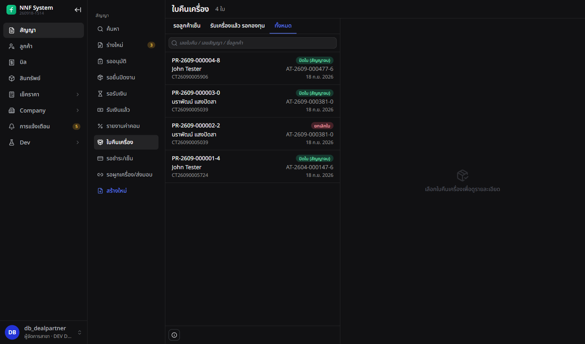
ฝั่งร้าน แท็บ "ทั้งหมด": ใบทั้งสี่ใบในตารางข้างบน
บัญชีสำหรับเข้าไปดูเอง
| ใคร | บัญชี | เห็นเมนูไหน |
|---|
| ร้าน | db_dealpartner | เมนูห้ารายการใต้ "สัญญา" |
| สินเชื่อ | ui_fund_credit_a | ใบขออนุมัติร้าน |
| การเงิน | ui_fund_finance_a | ใบขอรับเงิน · ยอดค้าง · ใบจ่ายเงิน · ใบคืนเครื่อง · ตรวจสลิป |
| ผู้ดูแล | mcp_holding_admin | บริษัท สาขา สิทธิ์พิเศษ เงื่อนไขร้าน |
เข้าเร็ว: เปิด https://localhost:5173/dev-login?u=ชื่อบัญชี&to=เส้นทางที่อยากไป ·
หนึ่งบัญชีเปิดได้ครั้งละหนึ่งหน้าต่างเท่านั้น
11 ที่ยังไม่เรียบร้อย
สิบเรื่องที่เจอระหว่างเดินจริง ทั้งหมดเขียนส่ง BE ไว้ในเอกสารตอบงานแล้ว ส่วนใหญ่เป็นเรื่องสิทธิ์
SHOP ตัน 2 จุด — ทั้งคู่เป็นเรื่องสิทธิ์ฝั่งหลังบ้าน
เซ็นสัญญาเองจนจบไม่ได้ — ขั้นใส่ชื่อพยานไม่เปิดให้บัญชีร้าน ร้านจริงค้างที่หน้ารอเซ็นทุกครั้ง ·
ให้ลูกค้าเซ็นใบรับคืนไม่ได้ — กดแล้วขึ้นไม่มีสิทธิ์ ทั้งที่รับคืนที่ร้านบังคับต้องมีลายเซ็น
ที่เหลือ FE กลบให้แล้ว (ตัวเลือกที่ไม่ควรขึ้นก็ไม่ขึ้น · รหัสกลายเป็นคำไทย) ·
ยังไม่ได้ทดสอบ 2 ขั้น เพราะ DEV ไม่เหลือสัญญาที่ใช้งานอยู่ และยังไม่มีร้านที่สอง
ขวางร้านจริง ๆ สองข้อ
- ร้านเซ็นสัญญาเองจนจบไม่ได้ — คำสั่งใส่ชื่อพยานและคำสั่งสร้างพยานยังไม่เปิดให้บัญชีร้าน
ร้านจริงจะค้างอยู่ที่รอเซ็น
- ร้านให้ลูกค้าเซ็นใบรับคืนเครื่องไม่ได้ — หน้าจอเซ็นอ่านข้อมูลจากที่ที่บัญชีร้านเข้าไม่ถึง
กดเซ็นแล้วขึ้นว่าไม่มีสิทธิ์ ทั้งที่การรับคืนที่ร้านต้องมีลายเซ็นลูกค้า
เรื่องที่หน้าจอกลบให้แล้ว แต่ควรแก้ที่ต้นทาง
- หน้าปิดสัญญาก่อนกำหนดยังเสนอเงินสดสำหรับสัญญาของร้าน ทั้งที่จ่ายจริงไม่ได้ หน้าจอตัดออกให้แล้ว
- ฝ่ายสินเชื่อเปิดคิวสลิปได้ แต่ได้คิวว่างแทนที่จะถูกปฏิเสธ หน้าจอซ่อนเมนูตามสิทธิ์แทน
- สร้างสาขาโดยเว้นที่อยู่ว่าง ทำให้ระบบตอบข้อความดิบของฐานข้อมูล หน้าจอเลี่ยงด้วยการไม่ส่งช่องนั้น
- อัลบั้มรูปบอกเหตุผลการล็อกผิด เมื่อใบขอรับเงินถูกยกเลิกหรือจ่ายแล้ว หน้าจอเดาเหตุผลจากสถานะเอาเอง
ค้างเป็นคำถาม ไม่ใช่ข้อผิดพลาด
- ฝ่ายการเงินเปิดใบคืนเครื่องใหม่จากหน้าคิวไม่ได้ ต้องไปที่หน้าสัญญา ถ้าอยากให้เปิดจากคิวได้ ต้องเพิ่มปุ่ม
- ตัวเลขบนเมนูใหม่ยังไม่มี รอฝั่งหลังบ้านส่งตัวนับมาให้
- แนบสลิปหลักฐานการโอนบนใบจ่ายเงินยังทำไม่ได้ รอเปิดชนิดไฟล์ใหม่ที่ฝั่งเก็บไฟล์
สองขั้นที่ยังไม่ได้ทดสอบ
- ลูกค้าส่งสลิปจริงแล้วฝ่ายการเงินอนุมัติ — ตอนทดสอบไม่มีสัญญาร้านที่ใช้งานอยู่เหลือ
- ร้านอีกร้านหนึ่งต้องมองไม่เห็นใบคืนเครื่องของร้านนี้ — บน DEV ยังไม่มีบัญชีร้านที่สอง
SHOP ร้านคู่ค้า
สาขาชนิดคู่ค้าของบริษัทกองทุน · ล็อกอิน db_dealpartner · เห็นเฉพาะข้อมูลสาขาตัวเอง
· เมนูทั้งหมดอยู่ใต้หัวข้อ "สัญญา"
รออนุมัติ /admin/contracts/pending-approval หลังยื่นขออนุมัติ
ใช้ทำอะไร ดูว่าใบที่ยื่นไปถึงไหนแล้ว
- สถานะ: ยื่นแล้ว · อนุมัติแล้ว · ส่งกลับ · ถอนแล้ว
- ยื่นซ้ำได้ ใบเก่ากลายเป็นประวัติ ใบล่าสุดคือใบที่มีผล
รอยื่นปิดงาน /admin/contracts/settlement-close หลังสัญญาใช้งาน
ใช้ทำอะไร อัปโหลดรูปส่งมอบ แล้วกดยื่นขอเงินจาก FUND
- หัวจอบอกยอดที่ยังไม่ได้รับรวมทุกสัญญา
- เปิดสัญญาขึ้นมาจะเห็นการ์ดเงิน + รายการตรวจ + ปุ่มยื่นปิดงาน
- ใบที่ถูกส่งกลับมาแก้ก็มารออยู่ที่นี่ พร้อมเหตุผล
การ์ดใบขอรับเงิน บนหน้าสัญญา ตลอดอายุสัญญา
ใช้ทำอะไร ดูว่าสัญญานี้ FUND ติดอยู่เท่าไหร่ และติดอยู่ที่ขั้นไหน
รอรับเงิน /admin/contracts/settlement-payment หลังยื่นปิดงาน
ใช้ทำอะไร รอ FUND ตรวจและจ่าย · ถอนการยื่นได้จากที่นี่
รับเงินแล้ว /admin/contracts/partner-payouts หลัง FUND โอน
ใช้ทำอะไร ดูใบจ่ายเงินที่โอนเข้ามาแล้ว รวมใบที่ถูกกลับรายการ
รายงานค่าคอม /admin/contracts/partner-commission ดูย้อนหลังได้เสมอ
ใช้ทำอะไร ค่าคอมรายสัญญาและรวมรายเดือน
ใบคืนเครื่อง /admin/contracts/returns เมื่อลูกค้าคืนเครื่อง
ใช้ทำอะไร ดูใบคืนของสาขาตัวเอง · เปิดใบใหม่ต้องไปที่ท้ายหน้าสัญญา
ท้ายหน้าสัญญา /admin/contracts/search/:id ทุกขั้น
ใช้ทำอะไร ปุ่มทั้งหมดของสัญญา — และเป็นที่เดียวที่เปิดใบคืนเครื่องได้
- สัญญาใช้งานอยู่: ปุ่มยกเลิก/ถอดเครื่องถูกปิด เหลือ คืนเครื่อง / ยุติสัญญา
- ยื่นปิดงานแล้ว: อัลบั้มรูปส่งมอบขึ้นคำว่าล็อก
- จ่ายเงินแล้ว: ปุ่มบอกว่าให้ใช้ขั้นตอนคืนเครื่องแทน
FUND ฝ่ายการเงินกองทุน
ระดับบริษัทของบริษัทกองทุน · ล็อกอิน ui_fund_finance_a · เห็นทุกร้านในบริษัทตัวเอง
· เป็นคนตรวจ จ่าย และปิดใบคืนเครื่อง
ใบขอรับเงินร้าน /admin/partner-settlements หลัง SHOP ยื่น
ใช้ทำอะไร ไล่ดูรูปส่งมอบ แล้วติ๊กตรวจแล้ว หรือส่งกลับให้แก้
ยอดค้างต่อร้าน /admin/partner-balance ดูภาพรวม
ใช้ทำอะไร ดูว่าค้างร้านไหนเท่าไหร่ และค้างเพราะใครยังไม่ทำอะไร
ใบจ่ายเงินร้าน /admin/partner-payouts รอบจ่าย
ใช้ทำอะไร รวมใบที่ติ๊กแล้วของร้านเดียวกัน ออกใบ โอนจริง แล้วกดจ่ายแล้ว
ใบจ่ายเงินหนึ่งใบ /admin/partner-payouts/:id หลังออกใบ
ใช้ทำอะไร กดจ่ายแล้ว · เพิ่มแถวปรับยอด · กลับรายการทั้งใบ
ใบคืนเครื่อง /admin/partner-returns เมื่อมีใบคืนเปิดอยู่
ใช้ทำอะไร ตั้งแบบจบ · บันทึกเงินซื้อคืน · สั่งส่งเข้าคลัง · ปิดใบ
ใบคืนหนึ่งใบ — แบบร้านซื้อคืน จ่ายแล้ว + ในประกัน
ใบคืนหนึ่งใบ — แบบก่อนกองทุนจ่าย ยังไม่จ่าย
เทียบกับใบข้างบน กรอบเดียวกัน คนละผลลัพธ์
แท็บประวัติของใบคืน ตรวจย้อนหลัง
ใช้ทำอะไร ไทม์ไลน์เดียวรวมทุกเรื่องของใบนั้น — ใบ · ลายเซ็น · สต็อก · เจ้าของ · เงิน
คลังรับเครื่อง /admin/partner-returns/warehouse แบบส่งเข้าคลังเท่านั้น
ใช้ทำอะไร รับเครื่องที่ SHOP ส่งมา · ยังรับไม่ครบ ปิดใบไม่ได้
ตรวจสลิป /admin/payment-submissions ทุกงวดที่ลูกค้าโอน
ใช้ทำอะไร อนุมัติสลิปค่างวดของลูกค้า — เส้นทางเดิม ไม่ใช่ของใหม่
- สิทธิ์บันทึก/ยืนยันการชำระต้องให้เป็นรายคน ไม่ได้ติดมากับตำแหน่ง
CREDIT ฝ่ายสินเชื่อกองทุน
ล็อกอิน ui_fund_credit_a · มีหน้าเดียวในเรื่องนี้ · เปิดคิวของ FUND ได้แต่ได้ลิสต์ว่าง
ไม่ได้ถูกปฏิเสธ จึงต้องซ่อนเมนูด้วยสิทธิ์
ใบขออนุมัติร้าน /admin/partner-cases ก่อนสัญญาเปิดบิล
ใช้ทำอะไร อนุมัติหรือส่งกลับใบที่ SHOP ยื่นมา
- ไม่มีพิน มีแค่หน้าต่างยืนยัน
- อนุมัติแล้วมีอายุ 14 วัน
- ส่งกลับ → สัญญาย้อนเป็นร่าง SHOP แก้แล้วยื่นใหม่ได้
สิ่งที่ CREDIT ทำไม่ได้ กันความเข้าใจผิด
- ตรวจใบขอรับเงิน หรือติ๊กตรวจแล้ว — ไม่ได้
- ออกหรือจ่ายใบจ่ายเงิน — ไม่ได้
- เปิดหรือปิดใบคืนเครื่อง — ไม่ได้
- ตรวจสลิปค่างวด — ไม่ได้